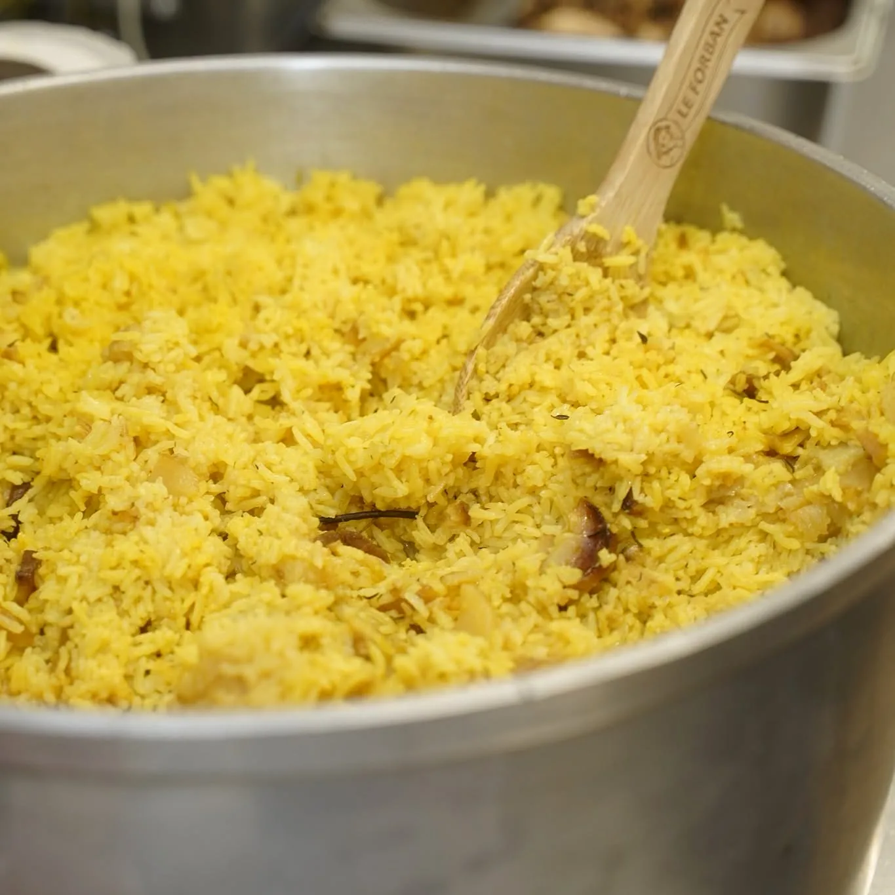
Cuisine traditionnelle créole · Saint-Pierre
La Petite Cuisine Gourmande
« Lo Gout, Lo Kèr, La Tradition »
Cari feu de bois, 100 % fait maison. Chaque jour, de nouvelles marmites à savourer sur place, à emporter ou en traiteur.
132 rue Luc Lorion, résidence Les Poètes · Saint-Pierre
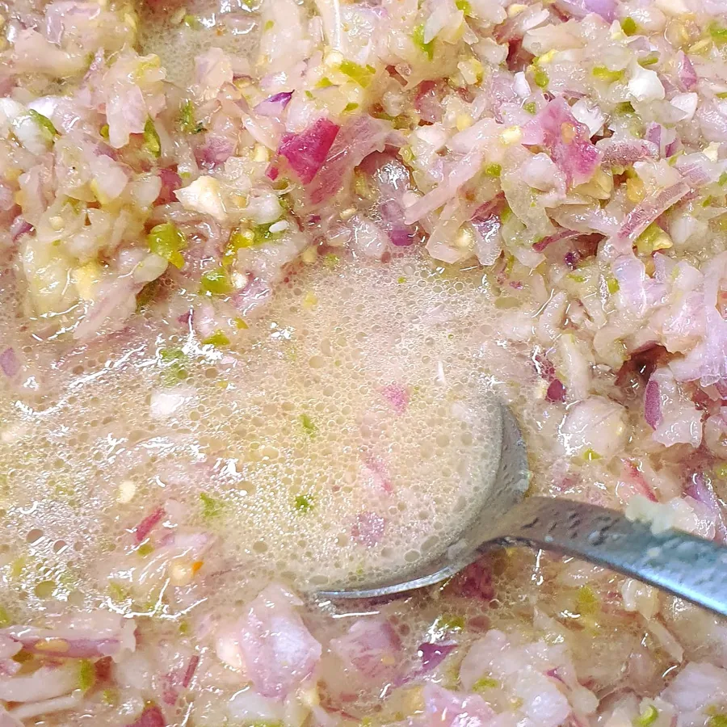
Lo zistwar
Tout a commencé à côté de maman
« Marmay mi té curieux, toujour côté maman po gad a el fé cui mangé : koman i plich l'ail, a kwé i serv zoignon… Un jour mi t travail frigoriste St Pierre côté lo resto, la patronne la propose amwin ropren lo restaurant, et la lo zistwar la komenssé ! »
En français : enfant curieux, toujours aux côtés de maman pour la regarder cuisiner, apprendre comment éplucher l'ail, à quoi sert l'oignon… Puis un jour, frigoriste à Saint-Pierre juste à côté du resto, la patronne propose de reprendre le restaurant. Et l'histoire commence !
Aux marmites : Fred le Cuistot
Dans les marmites
Ce qui mijote cette semaine
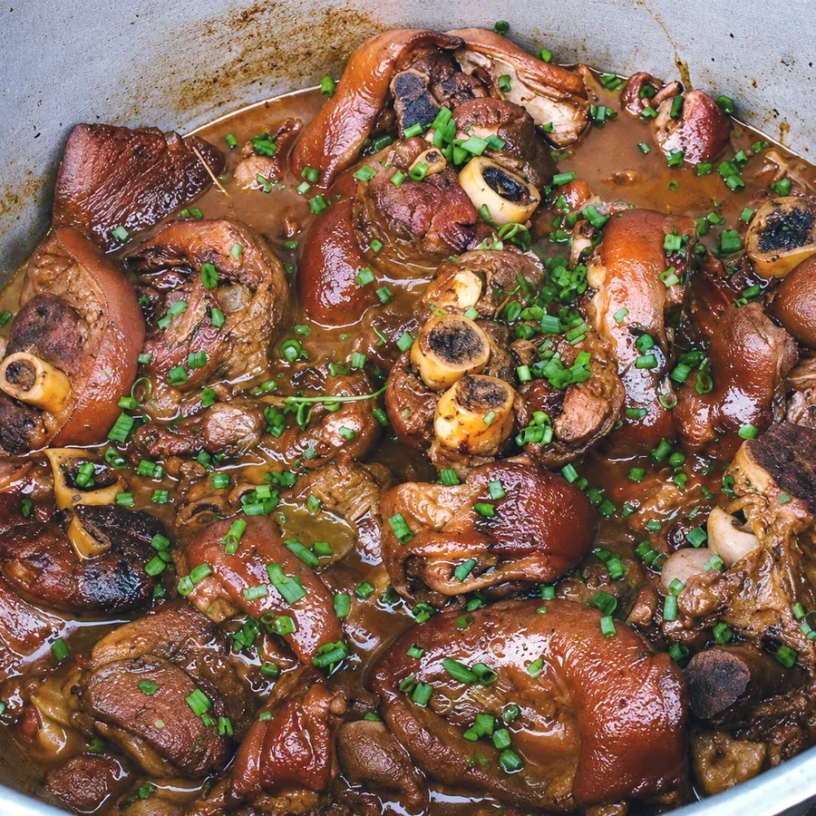
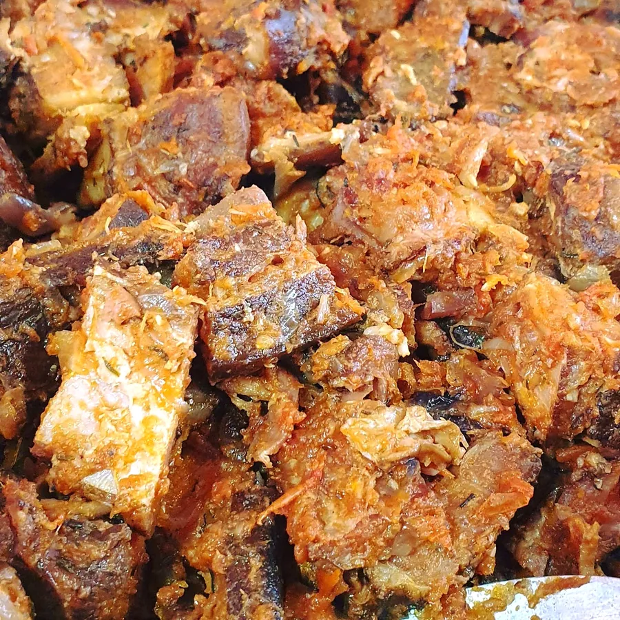
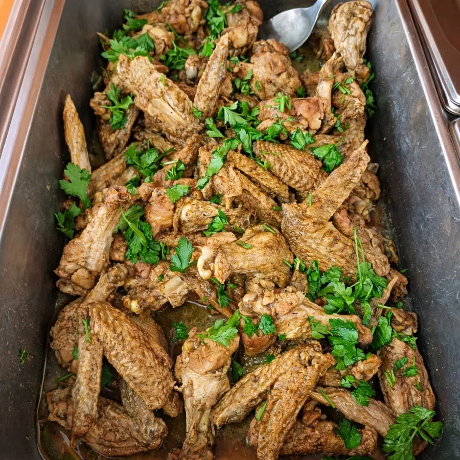
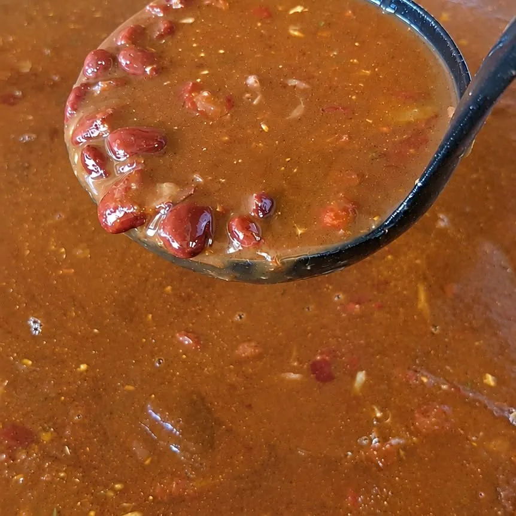
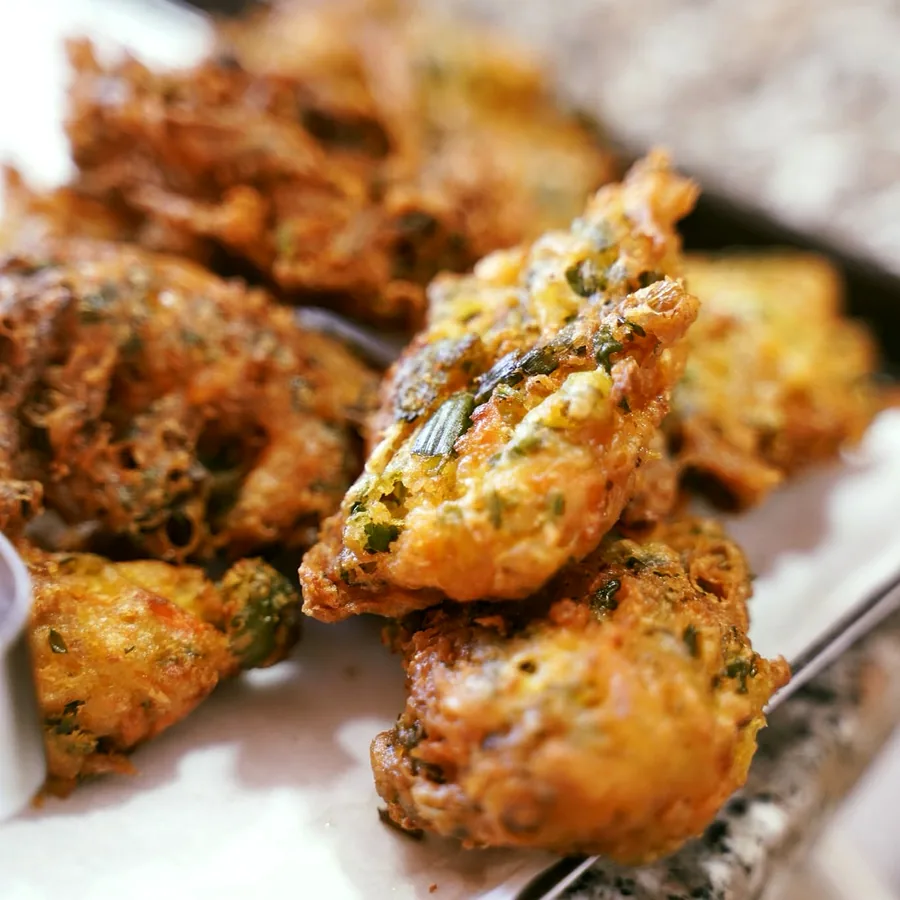
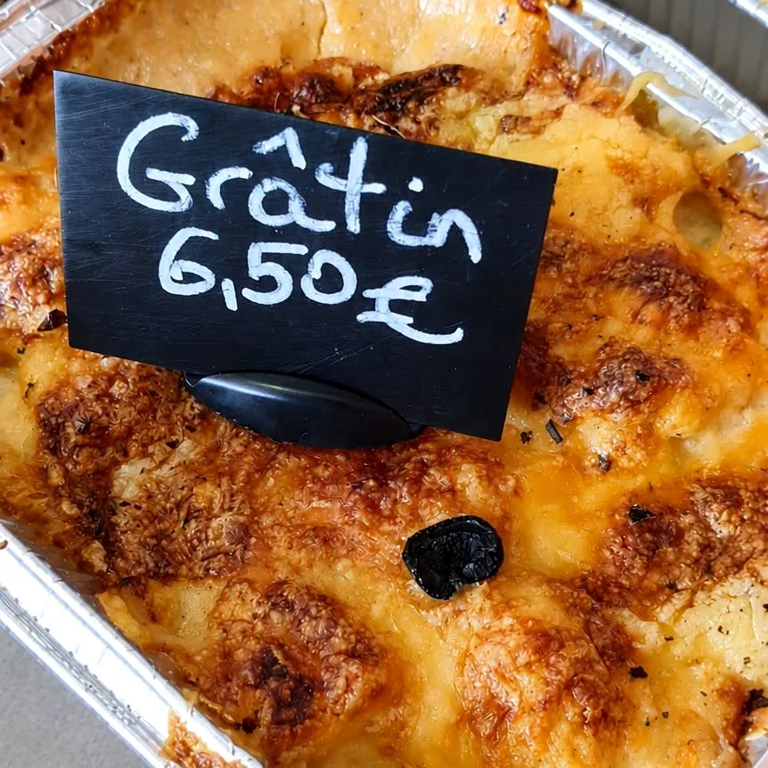
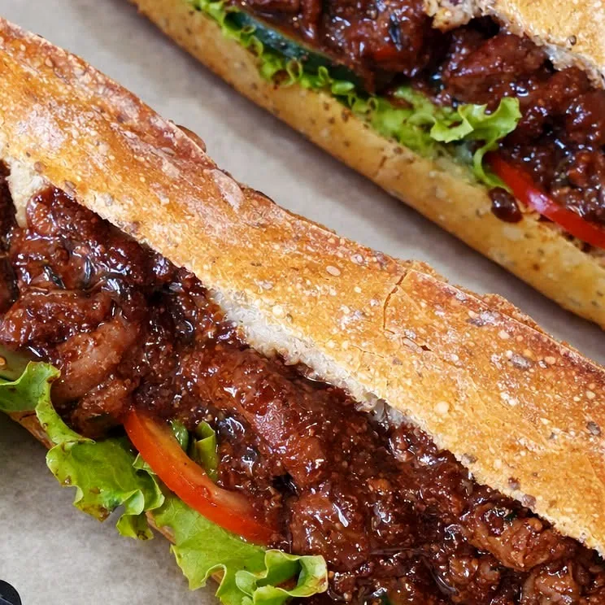
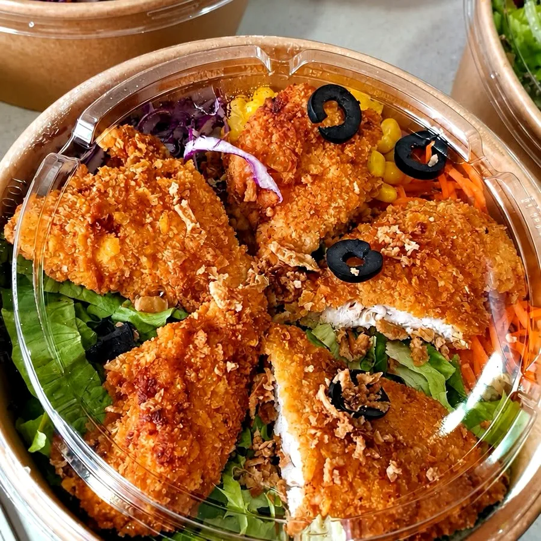
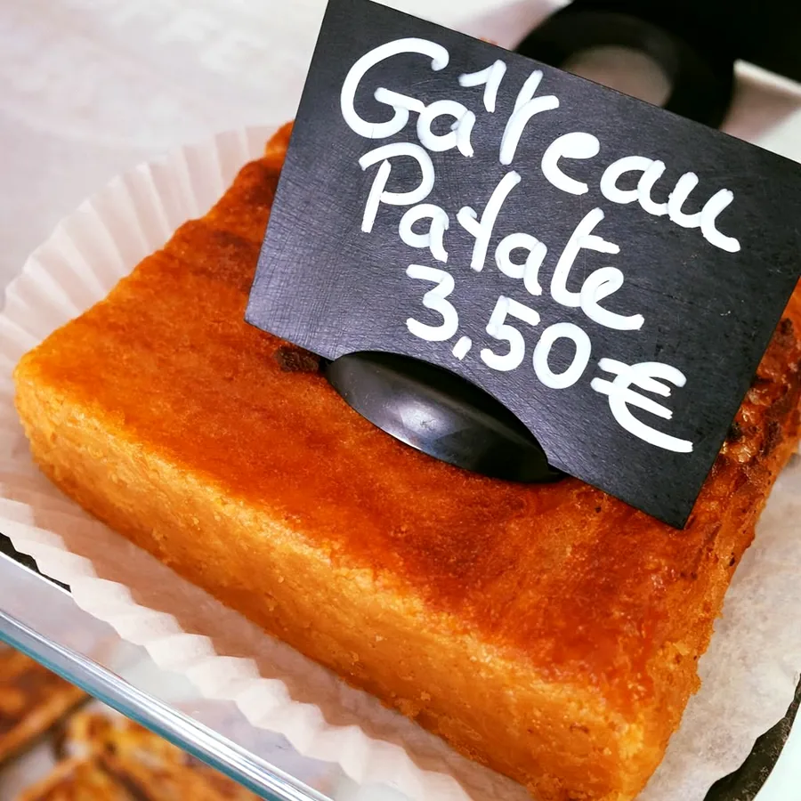
Faites glisser pour découvrir les marmites →
Comme vous préférez
Sur place, à emporter ou traiteur
Sur place
Une table en salle ou en terrasse, au cœur de la résidence Les Poètes, pour savourer le plat du jour bien chaud.
À emporter
Barquettes, salades, sandwichs et petites gourmandises : réservez avant 10h et repartez avec votre repas péi.
Traiteur
Pour vos repas de famille, vos fêtes et vos évènements, Fred prépare les marmites pour toute la tablée.
Les astuces péi de Fred
Fred le Cuistot partage ses secrets
En vidéo, Fred dévoile ses astuces de cuisine créole « à garder sous le coude », et vous invite à partager la vôtre en commentaire. Son top 5 du 30 octobre a régalé des milliers de curieux.
14 954vues pour « 5 astuces péi »
29 Kabonnés sur Facebook
Commande des fêtes
Un Noël péi, préparé par Fred
Pour vos tablées de fin d'année, confiez les marmites à La Petite Cuisine Gourmande : cari feu de bois, accompagnements et douceurs maison, en formule traiteur, pour profiter pleinement de vos invités.
Parlez-nous de votre repas, du nombre de convives et de vos envies : on vous répond avec plaisir.
★★★★★
100 %
de recommandations sur Facebook (11 avis).
Les clients saluent une cuisine locale généreuse et un accueil chaleureux.
Vien retrouv lo goût lontan
Passez nous voir à Saint‑Pierre
Réserver & commander
0693 94 42 58 · appel ou WhatsApp
Commandez avant 10h · salades avant 9h30